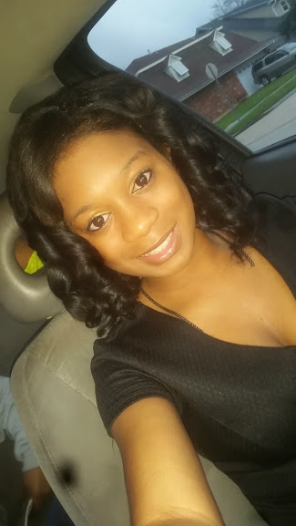

Najah Salihah Smith |
|
|  |
I have worked on a great number of programming projects for school, businesses, and non-profit organizations. This past summer I worked as an intern for 2 weeks at the University of North Carolina at Charlotte on a project that focused on recognizing human hand gestures. During that short period of time I learned to read and analyze accelerometer data and build android appplications. On my return home I began working for the Dinerral Shavers Educational Fund as a web developer intern. I am now completing my undergraduate studies and looking for new job opportunities. |